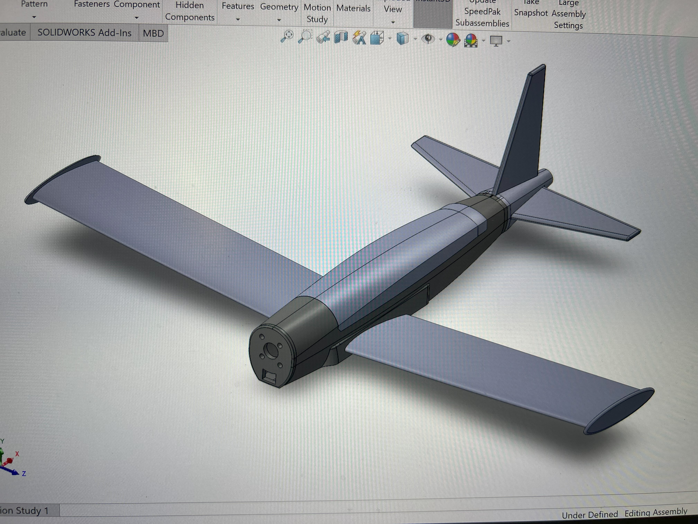
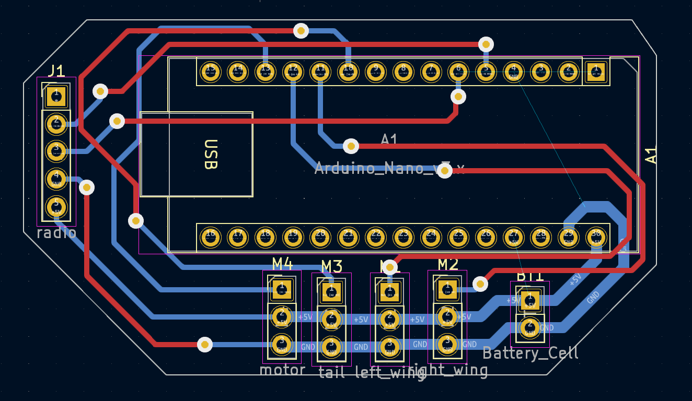
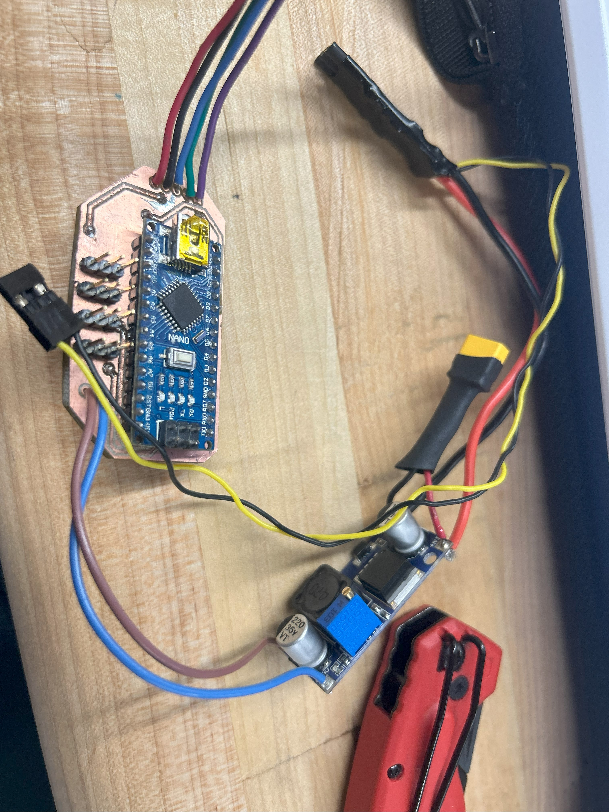
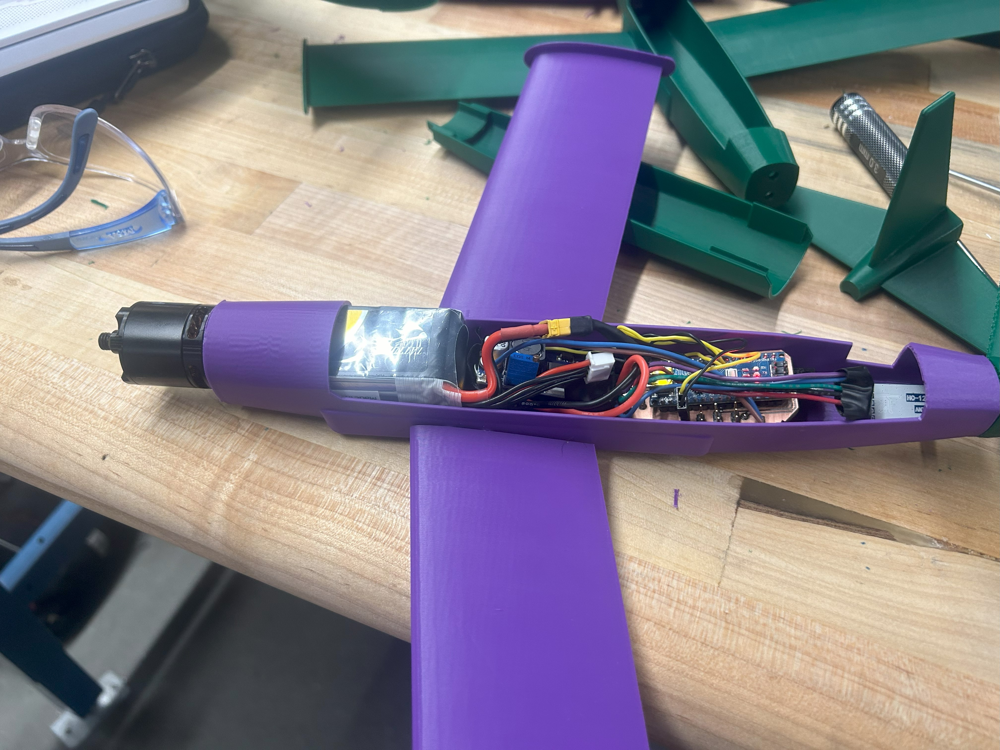
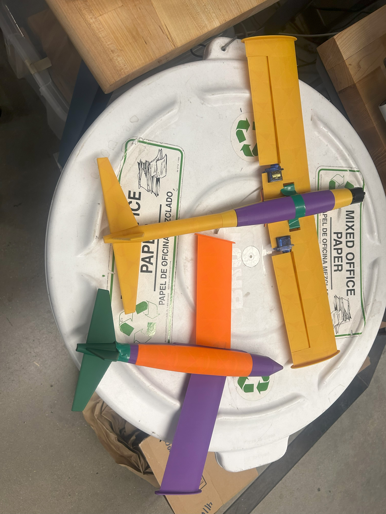
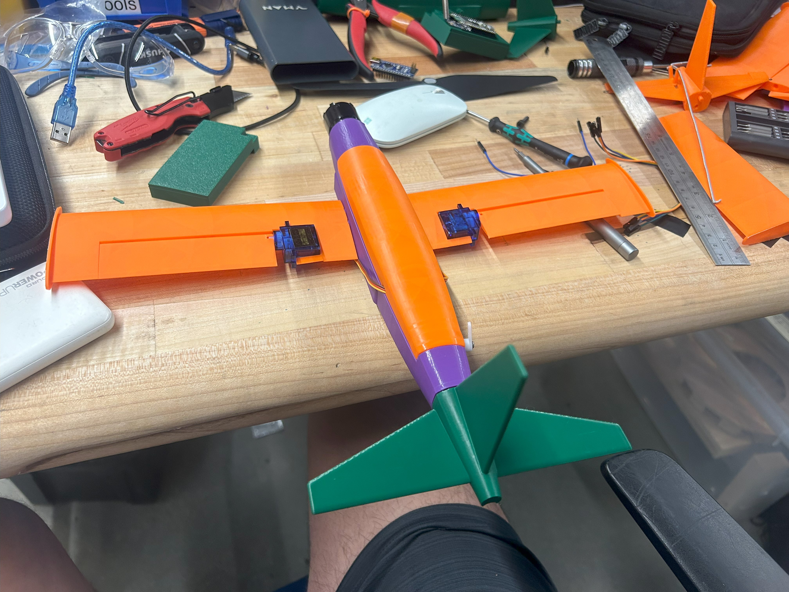

For the final project in my AE 3030 (Aerodynamics) course at Georgia Tech, I chose to design and build two devices—a fully
functional RC plane (Marlin) and an unpowered glider (Nemo)—to demonstrate aerodynamic principles, specifically the effects
of different airfoils. Marlin featured a custom-designed, milled PCB with an Arduino Nano and HC-12 radio for flight control,
while Nemo was a smaller glider with interchangeable wings to showcase airfoil variations. This project allowed me to apply
aerodynamic theory through hands-on design and fabrication, creating practical tools for learning and experimentation.
The assignment was to bridge theoretical concepts from AE 3030, like lift and drag, with real-world engineering.
By building Marlin and Nemo, I aimed to create tangible demonstrations of airfoil effects, fostering a deeper understanding of
aerodynamics while honing my skills in electronics, programming, and fabrication.


Marlin: The RC Plane
For Marlin, I designed a custom PCB using KiCAD to integrate an Arduino Nano and HC-12 radio module (433 MHz) for flight control.
The PCB was milled using the Invention Studio's PCB mill, leveraging my prior experience with FlatCAM to generate precise G-code.
I adapted the ground control hardware and code from my QuadFrog project, originally written for a Raspberry Pi 4, to work with the
Arduino Nano. This required rewriting portions of the control software in Arduino IDE to handle aileron and throttle inputs as well as adapting the python GUI I made for my quadcopter to work for a fixed wing plane, ensuring
reliable communication between the plane and my laptop.
The airframe was designed in SolidWorks and fabricated using 3D-printed PLA components for the fuselage and
motor mount. I iterated on prototypes to optimize weight and balance, ensuring the plane could handle the aerodynamic
loads of different airfoils.
Nemo: The Glider
Nemo was designed as a smaller, unpowered glider to demonstrate airfoil effects. I created interchangeable wings with different
airfoil profiles (e.g., NACA 2412, flat-bottom, and inverted configurations) using laser-cut foam board. The wings attached via a
slot-and-tab system, allowing quick swaps during demonstrations. During testing, Nemo showcased aerodynamic phenomena like roll
induced by an upside-down wing, providing clear visual demonstrations of lift asymmetry.
Fabrication and Iteration
Both airframes were prototyped at the Invention Studio. I used the Ultimaker S3s for precise component fabrication. Iterative testing
involved hand-launching Nemo to evaluate airfoil performance and powered test flights for Marlin to tune control responses. Feedback
from classmates helped refine wing attachment mechanisms and balance, ensuring both devices met the project's goals within the short timeframe.


This project fused aerodynamic design with electronics and programming. Aesthetically, Marlin and Nemo featured sleek,
functional designs inspired by real aircraft, enhancing their educational appeal. Technically, I applied airfoil theory
to optimize wing performance and embedded programming to enable precise flight control.
As the sole designer, I handled the aerodynamic design, PCB development, programming, and fabrication for both Marlin and Nemo.
I collaborated with AE 3030 classmates, who provided feedback on airfoil selection and flight stability during group testing sessions.
Their insights helped me adjust Nemo's design for better glide performance. My unique contribution was the custom PCB for Marlin,
which integrated the Arduino Nano and HC-12 radio, enabling adaptable control code that could be reused across various plane designs.
Both devices met the project's goals, earning positive feedback from my instructor for their functionality and creativity. The project's
success has inspired me to continue developing the RC plane's circuitry and code for broader applications in future aircraft designs.

